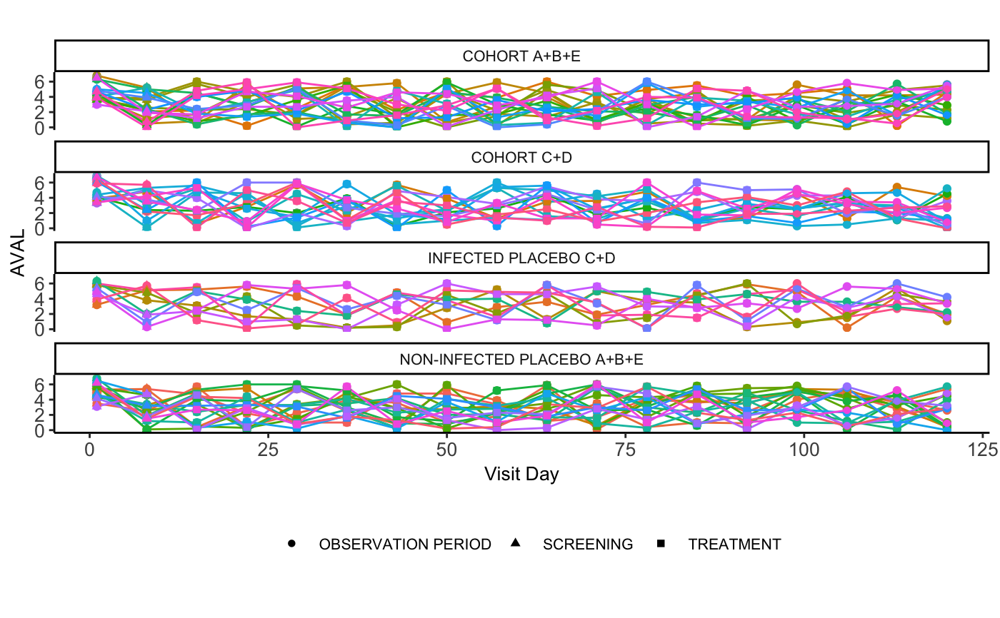

spgtplot.RdGenerate a flexible facet spaghetti plot for endpoint analysis
spgtplot(data, group_by, x, y, subj = "USUBJID", title = "", xlab = "Visit Day", ylab = "AVAL", symb = NULL, caption = "")
| data | a dataframe containing the input data to plot |
|---|---|
| group_by | a column name containing factors to split the plot by |
| x | column name for x-axis parameter |
| y | column name for y-axis parameter |
| subj | column name for unique subject identifier, default is "USUBJID" |
| title | custom plot title, passed as a string |
| xlab | custom x-axis plot label, passed as string |
| ylab | custom y-axis plot label, passed as a string |
| symb | optional parameter to shape markers by a factor type column |
| caption | optional string to include as a caption on bottom of plot |
produces a spaghetti plot with study endpoint measurements over time that can be facet by a factor-class column variable
spgtplot(data = AZA, group_by = "CHRTGRP", x = "ADY", y = "AVAL", symb = "EPOCH")